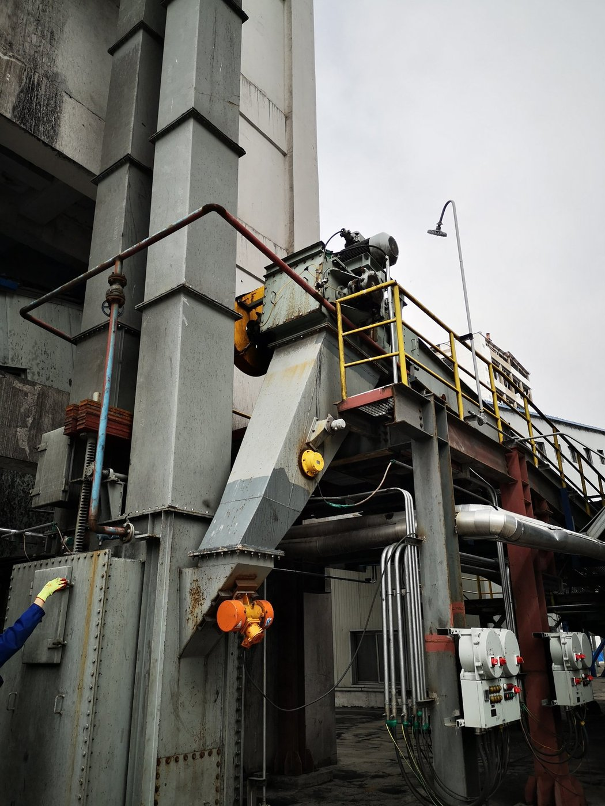

На предприятиях новой энергетики, где перерабатываются аккумуляторные порошки, анодный графит или катодные прекурсоры, попадание кислорода в линию транспортировки недопустимо. Герметичный цепной скребковый конвейер с азотным инертированием — один из самых надёжных способов перемещать такие материалы, исключая контакт с воздухом. В статье разбираем конструкцию, уплотнения, стратегию продувки и опыт поставки подобного оборудования.
Содержание
1. Почему порошки новой энергетики требуют транспортировки без кислорода 2. Как работает азотное инертирование в герметичном конвейере 3. Основные конструктивные решения 4. Типичные применения 5. Пример внедрения 6. Рекомендации по выбору 7. Эксплуатационные преимущества1. Почему Порошки Новой Энергетики Требуют Транспортировки Без Кислорода
Многие материалы в цепочке производства литий-ионных аккумуляторов и новой энергетики пирофорны, гигроскопичны или взрывоопасны при смешении с воздухом. При транспортировке поверхность порошка постоянно обновляется, и любое поступление воздуха может вызвать:
- Окисление и потерю качества: катодные прекурсоры и порошки восстановленных металлов меняют химический состав при контакте с кислородом, что нарушает однородность партии.
- Тепловой разгон: мелкий углерод, кремний или литийсодержащие материалы могут самонагреваться или воспламеняться на воздухе.
- Риск пылевого взрыва: даже порошки с низкой минимальной энергией воспламенения безопасны при содержании кислорода ниже предельно допустимой концентрации.
Поэтому конвейер здесь выступает не просто транспортным оборудованием, а частью системы безопасности.
2. Как Работает Азотное Инертирование в Герметичном Конвейере
Азотное инертирование заменяет воздух внутри корпуса конвейера азотом. Цель — поддерживать небольшое избыточное давление, чтобы при возможных уплотнениях утечка шла наружу, а не внутрь, и удерживать концентрацию кислорода ниже предельно допустимой для данного материала.
Типовая инертная система включает:
- Герметичный корпус: все стыки, крышки и проходы валов уплотнены, чтобы минимизировать потери азота и приток воздуха.
- Точки подачи азота: расположены у загрузочного и разгрузочного устройств, а также вдоль корпуса для создания контролируемой схемы продувки.
- Анализатор кислорода: непрерывно отбирает пробы атмосферы внутри конвейера и регулирует расход азота для поддержания заданного уровня O₂.
- Предохранительный сброс давления: обеспечивает безопасный сброс избыточного азота на скруббер или в линию рециркуляции.
3. Основные Конструктивные Решения
Цепной скребковый конвейер изначально удобен для герметизации: материал перемещается в полностью закрытом прямоугольном желобе. Чтобы сделать его по-настоящему газонепроницаемым, мы прорабатываем четыре области:
3.1 Корпус
Секции изготавливаются с прецизионными фланцами и уплотнительными прокладками или кольцевыми канавками. Шаг крепежа выдерживается малым, чтобы фланец не прогибался под давлением. В зонах абразивного или коррозионного воздействия рабочие поверхности футеруются или наплавляются.
3.2 Уплотнения валов
Ведущий и натяжной валы выводятся из корпуса через сальниковые набивки, торцевые механические уплотнения или азотно-продуваемые лабиринтные уплотнения. Выбор зависит от давления, температуры и дисперсности порошка.
3.3 Цепь и скребки
Цепь движется по замкнутому контуру внутри корпуса, перемещая материал массой с минимальной турбулентностью. Зазоры между скребками и корпусом подбираются так, чтобы исключить измельчение или уплотнение порошка, но не нарушать ход цепи.
3.4 Обслуживание и инспекция
Герметичность не означает недоступности. Герметичные люки с быстроразъёмными зажимами позволяют оператору проводить осмотр, очистку и замену скребков, не нарушая целостности корпуса.
4. Типичные Применения
- Прекурсоры катодных материалов: NCM, NCA, LFP и LCO-промежуточные продукты часто требуют транспортировки с низким содержанием кислорода между калцинаторами, мельницами и упаковкой.
- Анодный графит и кремний-углеродные композиты: чувствительны к окислению и должны быть защищены при измельчении, нанесении покрытия и передаче.
- Соединения лития: карбонат и гидроксид лития реагируют с влагой и CO₂; азотная подушка стабилизирует атмосферу.
- Переработка чёрной массы: восстановленные активные материалы из отработанных аккумуляторов пирофорны, поэтому инертная транспортировка обязательна.
5. Пример Внедрения
На фотографии ниже — вертикальный герметичный цепной скребковый конвейер, установленный на предприятии по производству материалов для новой энергетики в Китае. Агрегат перекачивает порошок между этажами технологического процесса под слоем азота.

Объект проектаУстановка включает мотор-редукторный привод в головной части, герметичные хвостовую и головную секции, инспекционные люки и трубопровод для подачи азота. Корпус был опрессован перед отгрузкой для проверки герметичности.
6. Рекомендации по Выбору
| Параметр | Типичное значение / требование | Зачем это важно |
|---|---|---|
| Содержание кислорода | < 2–5 % по объёму | Ниже предельно допустимой концентрации для большинства аккумуляторных порошков |
| Давление в корпусе | Небольшое избыточное (5–50 мбар) | Утечка наружу, исключение притока воздуха |
| Тип уплотнения | Сальниковое / торцевое / азотно-продуваемое лабиринтное | Соответствует давлению, температуре и абразивности |
| Скорость цепи | 0,1–0,5 м/с | Щадящая транспортировка, минимум пыли |
| Производительность | 1–100 т/ч | Соответствует расходу мельницы или реактора |
| Материалы | Углеродистая сталь, SS304, SS316L, футеровка | Коррозионная и абразивная стойкость |
7. Эксплуатационные Преимущества
- Безопасность: контролируется содержание кислорода, снижается риск пожара и взрыва.
- Качество: стабильный химический состав и влажность материала.
- Эффективность: полностью закрытая система предотвращает потери продукта и выбросы пыли.
- Соответствие нормам: удовлетворяет требованиям ATEX, NFPA 654 и местных правил по взрывобезопасности инертных систем.
- Гибкость: может располагаться горизонтально, наклонно или вертикально в зависимости от планировки цеха.
Часто задаваемые вопросы
Зачем применять азотное инертирование при транспортировке порошков?
Порошки, чувствительные к кислороду, например материалы новой энергетики, могут окисляться или самовоспламеняться на воздухе. Замена среды в конвейере азотом предотвращает реакцию и повышает безопасность.
Что такое герметичный цепной конвейер?
Это полностью закрытый скребковый конвейер с герметичным корпусом, уплотнёнными входами валов и надёжным уплотнением, изолирующим внутреннюю среду от цеха.
Какие порошки новой энергетики требуют транспортировки без кислорода?
Кремниевые аноды, литиевые соединения, никель-кобальт-марганцевые материалы и другие пирофорные или склонные к окислению тонкие порошки обычно требуют инертированной транспортировки.
Как Tianyi герметизирует конвейер от утечки газа?
Герметичные стыки корпуса, двойные механические торцевые уплотнения валов с азотной продувкой и уплотнённые люки обеспечивают изоляцию и контроль внутренней среды.
Можно ли контролировать герметичный конвейер по безопасности?
Да. Мы добавляем контроль состава газа, температуры и скорости с автоматическим отключением, чтобы аномалии фиксировались до инцидентов.
Нужен герметичный конвейер для чувствительных к кислороду порошков?
Пришлите характеристики материала, требуемый предел содержания кислорода и компоновку цеха. Мы подберём цепной скребковый конвейер с азотным инертированием специально под ваш технологический процесс.
Запросить техническое предложение